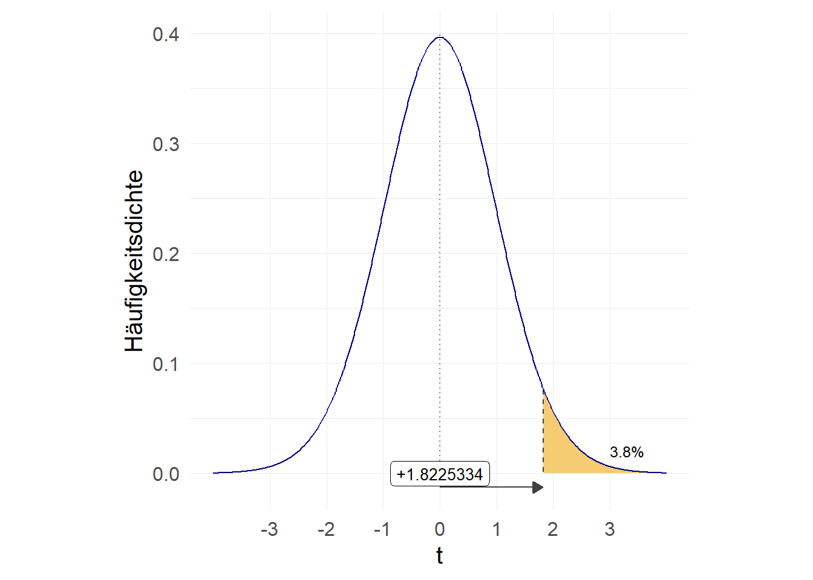

8 t-Tests
Vergangene Session hatten wir aus Stichproben Aussagen über Parameter in einer Grundgesamtheit getroffen. Eigentliches Ziel statistischer Auswertungen ist aber häufig, Entscheidungen über allgemeine Hypothesen zu treffen.
Ausgangsszenario: wir betrachten ein (annähernd) normal-verteiltes Merkmal und möchten durch eine Stichprobe überprüfen, ob der Mittelwert mit unserer Vermutung übereinstimmt bzw. größer/kleiner ist. Testen wir auf Übereinstimmung, verwenden wir einen sog. beidseitigen Test, bei einem einseitigen Test testen wir ob der Stichprobenwert signifikant größer bzw. kleiner als der vermutete Populationswert ist.
Wir möchten einen Hypothesentest zu den durchschnittlichen Mietkosten von Studierenden in Oldenburg durchführen. Eine Zeitung behauptet, Studierende würden im Schnitt 320 Euro für Miete ausgeben. Wir machen eine Umfrage unter 40 Studierenden und kommen auf folgende Werte:
input miete
301
291
304
324
356
384
407
306
310
230
307
252
306
355
194
320
233
265
214
319
320
256
234
346
223
344
294
253
383
360
305
378
270
327
360
310
345
300
361
253
end
tabstat miete, s(mean sd) miete
variable | mean sd
-------------+--------------------
miete | 305 52.05323
----------------------------------Die Antworten haben also ein arithmetisches Mittel von 305 Euro und eine Standardabweichung von 52.05 Euro. Der Punktschätzer aus der Stichprobe legt uns also nahe, dass die Mieten in Oldenburg in der Tat unter 320 EUR liegen. Wie wir letzte Woche gesehen haben, sollten wir uns nicht allein auf den Punktschätzer verlassen, sondern auch die Streuung in der Stichprobe mitberücksichtigen. Dies leisten die Hypothesentests. Dabei werden immer zwei sich widersprechende Hypothesen formuliert, die sog. \(H_0\) - die Nullhypothese und die \(H_A\) - die Alternativhypothese. Die \(H_0\) beschreibt dabei immer den bisherigen Kenntnisstand und die \(H_A\) formuliert die zu testende Aussage. Die Hypothesen unterscheiden sich dann je nachdem ob wir einen gerichteten oder einen ungerichteten Test durchführen:
Zunächst müssen wir uns entscheiden ob wir eine gerichtete oder ungerichtete Hypothese testen möchten:
- ungerichtete Hypothese: “die wahren Mietausgaben der Studierenden in Oldenburg sind ungleich 320 Euro”
- gerichtete Hypothese: “die wahren Mietausgaben der Studierenden in Oldenburg sind kleiner/größer als 320 Euro”
Formal werden die Hypothesen dann wie folgt festgehalten:
- ungerichtete Hypothesen: \(H_0: \mu = 320 Euro\) und \(H_A: \mu \neq 320 Euro\)
- gerichtete Hypothesen:
- rechtsseitig \(H_0: \mu \leqslant 320 Euro\) und \(H_A: \mu > 320 Euro\)
\(\Rightarrow\) die \(H_A\) hält fest, dass der wahre Wert größer als der Wert aus der \(H_0\) ist - linksseitig \(H_0: \mu \geqslant 320 Euro\) und \(H_A: \mu < 320 Euro\)
\(\Rightarrow\) die \(H_A\) hält fest, dass der wahre Wert kleiner als der Wert aus der \(H_0\) ist
- rechtsseitig \(H_0: \mu \leqslant 320 Euro\) und \(H_A: \mu > 320 Euro\)
Die grundlegende Idee des Hypothesentests ist, dass wir uns nur dann für die Alternativhypothese entscheiden, wenn wir eine ausreichend große Abweichung von dem in der \(H_0\) postulierten Wert feststellen. Dazu berechnen wir den \(t\)-Wert für den SP-Mittelwert entsprechend der Formel von letzter Woche:
\[t = \frac{\bar{x}-\mu_{0}}{\frac{\sigma}{\sqrt{n}}} = \frac{\bar{x}-\mu_{0}}{\frac{s_{x}}{\sqrt{n}}}\]
8.1 t-Test per Hand und in Stata
Wir berechnen also den t-Wert und gleichen diesen dann mit ttail mit der kumulierten Verteilung der t-Verteilung ab. Das Ergebnis von ttail gibt uns dann an, mit welcher Irrtumswahrscheinlichkeit wir die \(H_0\) verwerfen können. Anders formuliert: wie wahrscheinlich ist es, das \(\bar{x}\) in einer Stichprobe zu erhalten obwohl \(\mu_0\) in der Grundgesamtheit richtig ist?
In der Wissenschaft hat sich als Konvention etabliert, von einem signifikanten Unterschied zu sprechen wenn die Irrtumswahrscheinlichkeit unter 5% liegt. Das bedeutet:
Assuming that the null hypothesis is true and the study is repeated an infinite number times by drawing random samples from the same populations(s), less than 5% of these results will be more extreme than the current result.1
8.1.1 beiseitiger t-Test
Ein beidseitiger Test testet die \(H_0\) im Vergleich zur folgenden Aussage der \(H_A\): “die wahren Mietausgaben der Studierenden in Oldenburg sind ungleich 320 Euro”. Dazu formalisieren wir zunächst die \(H_0\) und \(H_A\):
\(H_0: \mu = 320 Euro \qquad H_A: \mu \neq 320 Euro\)
Für die Entscheidung hinsichtlich der Hypothesen ist beim beidseitigen Test wichtig, dass hier jeweils das Ergebnis aus pt() verdoppelt werden muss! \(\Rightarrow\) hier testen wir auf “größer oder kleiner” und invttail gibt uns die Wahrscheinlichkeit dafür, einen t-Wert größer als den eingetragenen zu erhalten:
-1.8225334Fläche links von -1.822533 (ttail gibt immer rechte Fläche an, daher 1-ttail um Fläche links zu erhalten):
.03802395Wir müssen aber die “rechte Seite” mitberücksichtigen, daher \(\times2\):
.07604791Das Ergebnis liegt also deutlich über 0,05. Wir würden also die \(H_0\) nicht verwerfen.
Neben der händischen Berechnung können wir in Stata die Funktion ttest nutzen, diese nimmt auch die Anpassung des p-Wertes beim beidseitigen Test vor. Neben den zu testenden Werten geben wir mit mu den in der Nullhypothese festgehaltenen Mittelwert an und wählen mit two.sided einen beiseitigen Test aus:
miete
One-sample t test
------------------------------------------------------------------------------
Variable | Obs Mean Std. Err. Std. Dev. [95% Conf. Interval]
---------+--------------------------------------------------------------------
miete | 40 305 8.230338 52.05323 288.3526 321.6474
------------------------------------------------------------------------------
mean = mean(miete) t = -1.8225
Ho: mean = 320 degrees of freedom = 39
Ha: mean < 320 Ha: mean != 320 Ha: mean > 320
Pr(T < t) = 0.0380 Pr(|T| > |t|) = 0.0760 Pr(T > t) = 0.9620Hier werden auch gleich die Ergebnisse für den linksseitigen und rechtsseitigen Test angezeigt. Diese sehen uns noch genauer an:
8.1.2 linksseitiger t-Test
Ein linksseitiger Test testet die \(H_0\) im Vergleich zu folgender Aussage: “die wahren Mietausgaben der Studierenden in Oldenburg sind kleiner als 320 Euro”. Formal sehen die \(H_0\) und \(H_A\) so aus:
\(H_0:\, \mu \geqslant 320Euro \qquad H_A:\, \mu < 320 Euro\)
Hier würden wir also nur die Fläche links vom berechneten t-Wert nachsehen:
-1.8225334.03802395Der Wert 0.038 ist kleiner als 0,05, dementsprechend würden wir auf Basis eines linksseitigen Hypothesentests die \(H_0\) verwerfen.
8.1.3 rechtsseitiger t-Test
Ein rechtsseitiger Test testet die \(H_0\) im Vergleich zu folgender Aussage: “die wahren Mietausgaben der Studierenden in Oldenburg sind größer als 320 Euro”. Formal sehen die \(H_0\) und \(H_A\) so aus:
\(H_0: \mu \leqslant 320 Euro \qquad H_A: \mu > 320 Euro\)
-1.8225334.96197602Wir sehen hier dass der Wert 1-pt(q = -1.822533, df = 40-1)=0.962 deutlich größer als 0,05 ist - dementsprechend würden wir auf Basis eines rechtsseitigen Hypothesentests die \(H_0\) nicht verwerfen.

All das haben wir eben auch schon in ttest gesehen:
miete
One-sample t test
------------------------------------------------------------------------------
Variable | Obs Mean Std. Err. Std. Dev. [95% Conf. Interval]
---------+--------------------------------------------------------------------
miete | 40 305 8.230338 52.05323 288.3526 321.6474
------------------------------------------------------------------------------
mean = mean(miete) t = -1.8225
Ho: mean = 320 degrees of freedom = 39
Ha: mean < 320 Ha: mean != 320 Ha: mean > 320
Pr(T < t) = 0.0380 Pr(|T| > |t|) = 0.0760 Pr(T > t) = 0.96208.2 Mittelwertvergleiche mit dem t-Test
Diese Testlogik können wir auch dazu verwenden, Kennzahlen für verschiedene Gruppen zu vergleichen.
8.2.1 Unverbundener t-Test
Eine häufige Frage zielt darauf ab zu analysieren, ob sich die Durchschnittswerte eines Merkmals zwischen zwei Gruppen unterscheiden. Wir hatten bereits gesehen, dass wir zB. auf Basis des Allbus von 2014 die durchschnittliche Körpergröße von Männern und Frauen in Deutschland vergleichen können. Dazu lesen wir zunächst den Datensatz ein und wählen dann nur die Angaben für das Jahr 2014 aus, die für hs16 nicht missing, also >0 sind:
Auch für Gruppenvergleich müssen zunächst Hypothesen aufgestellt werden.
Für einen beidseitigen Test ist die Alternativhypothese, dass es einen Gruppenunterschied gibt:
\(H_0: \mu_1 - \mu_2 = 0 \qquad H_A: \mu_1 - \mu_2 \neq 0\)
Ein linksseitiger Test hätte entsprechend die Alternativhypothese, dass der Gruppenunterschied kleiner als 0 ist:
\(H_0: \mu_1 - \mu_2 \geqslant 0 \qquad H_A: \mu_1 - \mu_2 < 0\)
Ein rechtssseitiger Test hätte entsprechend die Alternativhypothese, dass der Gruppenunterschied größer als 0 ist:
\(H_0: \mu_1 - \mu_2 \leqslant 0 \qquad H_A: \mu_1 - \mu_2 > 0\)
Wir vergleichen nun die Körpergrößen für Frauen und Männer im Allbus 2014 mit Hilfe folgender Hypothesen:
- ungerichtete Hypothese: \(H_0: size_{m} - size_{f} = 0 \qquad H_A: size_{m} - size_{f} \neq 0\)
- linksseitige Hypothese: \(H_0: size_{m} - size_{f} \geqslant 0 \qquad H_A: size_{m} - size_{f} < 0\)
- rechtsseitige Hypothese: \(H_0: size_{m} - size_{f} \leqslant 0 \qquad H_A: size_{m} - size_{f} > 0\)
Wenn wir nun die beiden Mittelwerte für Männer und Frauen vergleichen, bezieht sich das natürlich wieder nur auf die Punktschätzer für die Stichprobe:
12.8298Aber ist diese, in der Stichprobe festgestellte Differenz auch bezogen auf die Grundgesamtheit von Bedeutung? Dazu greifen wieder auf den ttest zurück, aber hier geben wir anstelle von == XYZ mit by(sex) die Gruppenvariable an:
Two-sample t test with unequal variances
------------------------------------------------------------------------------
Group | Obs Mean Std. Err. Std. Dev. [95% Conf. Interval]
---------+--------------------------------------------------------------------
MANN | 1758 178.7179 .1712443 7.18002 178.382 179.0537
FRAU | 1707 165.8881 .157618 6.512124 165.579 166.1973
---------+--------------------------------------------------------------------
combined | 3465 172.3974 .1595336 9.390824 172.0846 172.7102
---------+--------------------------------------------------------------------
diff | 12.82975 .2327403 12.37343 13.28608
------------------------------------------------------------------------------
diff = mean(MANN) - mean(FRAU) t = 55.1248
Ho: diff = 0 Satterthwaite's degrees of freedom = 3447.06
Ha: diff < 0 Ha: diff != 0 Ha: diff > 0
Pr(T < t) = 1.0000 Pr(|T| > |t|) = 0.0000 Pr(T > t) = 0.0000Da der p-Wert für den beiseitigen Test (unter Ha: diff != 0) deutlich unter 0,05 liegt, können wir hier die \(H_0\) verwerfen und gehen von signifikanten Größenunterschieden aus.
Für einen rechtsseitigen Test achten wir auf Ha: diff > 0- Männer sind also signifikant größer als Frauen.
Für einen linksseitigen Test ist hingegen Ha: diff < 0 ausschlaggebend: Männer sind also nicht signifikant kleiner als Frauen.
8.2.2 Verbundener t-Test
Möchten wir Werte vergleichen, welche in einer Verbindung zueinander stehen, ist der verbundene t-Test die richtige Wahl. Beispiele für verbundene Stichproben sind beispielsweise experimentelle Untersuchungen, welche Daten vor und nach einer Maßnahme/Treatment/Intervention messen. Anschließend soll anhand des Vergleichs der Ergebnisse und die Wirkung der Maßnahme evaluiert werden. Hier sind die Messwerte aus den beiden Gruppen (“vorher” und “nachher”) miteinander verbunden - bspw. wird eine Person mit Bluthochdruck auch nach der Maßnahme in der Tendenz einen höheren Blutdruck haben als eine Person, welche bereits zuvor einen niedrigeren Blutdruck hatte.
Ein fiktionales Beispiel:

Diese vorher/nachher Werte können wir jetzt mit einem verbundenen t-Test vergleichen:
Paired t test
------------------------------------------------------------------------------
Variable | Obs Mean Std. Err. Std. Dev. [95% Conf. Interval]
---------+--------------------------------------------------------------------
bp_bef~e | 120 156.45 1.039746 11.38985 154.3912 158.5088
bp_after | 120 151.3583 1.294234 14.17762 148.7956 153.921
---------+--------------------------------------------------------------------
diff | 120 5.091667 1.525736 16.7136 2.070557 8.112776
------------------------------------------------------------------------------
mean(diff) = mean(bp_before - bp_after) t = 3.3372
Ho: mean(diff) = 0 degrees of freedom = 119
Ha: mean(diff) < 0 Ha: mean(diff) != 0 Ha: mean(diff) > 0
Pr(T < t) = 0.9994 Pr(|T| > |t|) = 0.0011 Pr(T > t) = 0.0006Auch hier sehen wir wieder die Ergebnisse für einen links- (Ha: mean(diff) < 0) beid- (Ha: mean(diff) != 0) und rechtsseitigen (Ha: mean(diff) > 0) Test. Wir erkennen aus den Ergebnissen, dass der Blutdruck der Patient*innen:
- nach dem Treatment nicht signifikant höher ist - linksseitiger Test (bp_before < bp_after), linke Spalte
- sich vor und nach dem Treatment signifikant unterscheidet - beiseitiger Test (bp_before != bp_after), mittlere Spalte
- nach dem Treatment signifikant niedriger ist - rechtsseitiger Test (bp_before > bp_after), rechte Spalte
8.3 Übersicht zu Varianten für ttest
Für alle ttest-Varianten können wir mit , level(..) auch ein anderes Signifikanzniveau wählen. Standardmäßig wird \(\alpha=0,05\%\) verwendet.
- Vergleich zu einem Referenzwert:
ttest testvariable == referenzwert
Für Mittelwertvergleich gibt es insgesamt zwei Aspekte, anhand derer sich t-Tests unterscheiden:
- Die Varianz der Messwerte in den verglichenen Gruppen ist …
- gleich: \(\Rightarrow\)
ttest testvariable, by(gruppenvariable) - verschieden: \(\Rightarrow\)
ttest testvariable, by(gruppenvariable) unequal(wie oben)
- gleich: \(\Rightarrow\)
- Verbundene oder unverbundene Stichprobe?
- Sind die einzelnen Messwerte voneinander unabhängig? D.h. ein Messwert steht in keinem direkten Zusammenhang mit einem anderen \(\Rightarrow\)
ttest testvariable, by(gruppenvariable)für eine unverbundene Stichprobe (mit ggf.unequal) - Stehen die einzelnen Messwerte in einem Zusammenhang? D.h. ein Messwert steht in einem direkten Zusammenhang mit einem anderen \(\Rightarrow\) Werte für beide Variablen sollten “nebeneinander” abgelegt sein (wide-Format), dann kann mit
ttest vorher==nachherein verbundenerttestdurchgeführt werden.
- Sind die einzelnen Messwerte voneinander unabhängig? D.h. ein Messwert steht in keinem direkten Zusammenhang mit einem anderen \(\Rightarrow\)
8.4 Übungen 8-1
(Nutzen Sie für die Aufgaben 1 & 2 jeweils die Methode “per Hand” als auch ttest(), um beide Berechnungswege zu verstehen)
- Sie betrachten die Körpergröße von Menschen und fragen sich, ob diese sich von 172cm signifikant unterscheidet. Sie gehen davon aus, dass die Körpergröße eine normalverteilte Variable ist. In einer Stichprobe von 50 Personen finden Sie einen arithmetischen Mittelwert von
170cm170.4774 cm und einer Standardabweichung von9.268.513443 cm. Sie können sich die Daten wie folgt erstellen:
- Wie lauten die Hypothesen?
- Berechnen Sie den t-Wert und die Irrtumswahrscheinlichkeit, mit der die \(H_0\) verworfen werden kann.
- Wie lautet Ihre Entscheidung hinsichtlich der Hypothesen?
- Wenn Sie die vorherige Fragestellung mit einer gerichteten Hypothese: “sind Menschen im Mittel signifikant größer als 172cm?” untersuchen würden - was würde sich ändern?
8.5 Übungen 8-2
- Haben Befragte aus den alten Bundesländern ein höheres Einkommen als Befragte aus den alten Bundesländern?
- Verwenden Sie den Allbus 2018 und behalten Sie nur in Vollzeit beschäftigten Befragten (
work == 1), die ein Einkommen größer als 0 angeben (inc > 0) im Speicher (Tipp) - Verwenden Sie
genundlog, um ausincdas logarithmierte Einkommenlog_inczu erstellen. (Tipp) - Wie lauten die Hypothesen zu dieser Fragestellung?
- Müssen Sie
unequalsetzen? - Führen Sie den entsprechenden Test durch!
- Wie lautet Ihre Entscheidung hinsichtlich der Hypothesen?
8.6 Übungen 8-3
- Nutzen Sie den Beispieldatensatz
fuel.dtamitwebuse fuel,clear. Testen Sie mit einem gepaarten t-Test, ob der eingesetzte Spezialtreibstoff einen signifikanten Verbrauchseffekt inmpg2im Vergleich zumpg1hat!
8.7 weitere Übungen Kap 8
Für alle, die noch etwas mehr machen möchten:
- Sie erheben erneut eine Stichprobe mit 50 Personen und erhalten einen Mittelwert von
173cm173.3171 cm und eine Standardabweichung von6.15cm5.654176 cm.
- Wie hoch ist die Irrtumswahrscheinlichkeit für die Hypothese, dass der wahre Wert der Körpergröße in der Grundpopulation größer als 172cm ist? Stellen Sie die passenden formalen Hypothesen auf!
Sie können sich auch diese Daten wie folgt erstellen:
- Die Schätzung eines Experten ergab, dass das mittlere logarithmierte Einkommen von Vollzeiterwerbstätigen in Deutschland für das Jahr 2018 bei 7,6 log(EUR) liegt.2 Sie vermuten, dass sich die wahren Werte davon signifikant unterscheiden. Überprüfen Sie diese These! (Berechnen Sie die p-Werte jeweils mit
ttestund per Hand!)
- Laden Sie den kumulierten Allbus (
Allbus_1980-2018.dta). Wählen Sie alle Befagten für das Jahr 2018 aus, die Vollzeit arbeiten (work == 1) und ein Einkommen größer als 0 EUR angeben. (Tipp) - Denken Sie daran, die Missings mit
.zu überschreiben! (Siehe Hinweise für Hilfe beim Einlesen und Aufbereiten des Datensatzes!) - Verwenden Sie
genundlog, um ausincdas logarithmierte Einkommenlog_inczu erstellen. (Tipp) - Vergleichen Sie die Angaben des logarithmierten Einkommens der Befragten (
log_inc) mit der Aussage des Experten. - Formulieren Sie die Hypothesen!
- Führen Sie den passenden Test durch!
- Was müssten Sie verändern, wenn Sie vermuten dass die wahren Werte signifikant höher sind?
- Formulieren Sie auch für diese Variante die Hypothesen und führen Sie den entsprechenden Test durch! Berechnen Sie den Test neben
ttestauch “per Hand”! Kommen Sie auf das selbe Ergebnis?
- Sind Befragte, die in den 1960er Jahren geboren wurden, signifikant früher aus dem Elternhaus ausgezogen als Befragte, die in den 1970er Jahren geboren wurden?
- Laden Sie den kumulierten Allbus (
Allbus_1980-2018.dta). - Wählen Sie alle Befragten aus, die zwischen 1960 und 1979 geboren wurden (
yborngibt das Geburtsjahr an) - Überschreiben Sie die Missings für das Alter beim Auszug aus dem Elternhaus.
- Erstellen Sie eine Dummyvariable, welche den Wert
1annimmt wenn die Befragten nach 1969 geboren sind und 0 für alle früher geborenen. Tipp - Formulieren Sie die Hypothesen zur Fragestellung dieser Aufgabe!
- Müssen Sie
unequalsetzen? - Führen Sie den entsprechenden Test durch
- Wie lautet Ihre Entscheidung hinsichtlich der Hypothesen?
- Haben kleinere Frauen einen signifikant höheren BMI als größere Frauen?
- Laden Sie den kumulierten Allbus (
Allbus_1980-2018.dta). - Wählen Sie alle weiblichen Befragten aus mit Angaben aus dem Jahr 2014 aus, für die
hs16(Körpergröße) undhs18(BMI) > 0 sind! - Generieren Sie eine Variable, welche den Wert
1annimmt, wenn die Befragte größer als 160cm (der Medianwert) ist und0, wenn die Befragte kleiner als 160cm ist. Tipp - Führen Sie einen t-Test durch, ob die BMIs von größeren Frauen signifikant höher (>160cm) sind als die von kleineren Frauen (<160cm)
8.8 Hinweise
8.8.1 Auswahl der in Vollzeit beschäftigten Befragten
8.8.2 Kohortenvergleich Tipps
8.9 Gruppenunterschiede visualisieren
Auch für t-Tests empfiehlt sich eine grafische Darstellung: Quelle
Also visualisieren wir das Ergebnis des Gruppenvergleichs aus Aufgabe 8-2:
Zur Erinnerung, das hier war unsere Vorbereitung:
cd ""
use "Allbus_2018.dta",clear
keep if work == 1 & inc > 0
// Einkommensangaben logarithmieren:
gen log_inc = log(inc)Die Darstellung ist ein sog. stripplot, diese Funktion müssen wir erst installieren:
Als ersten Schritt können wir den Basis-Plot erstellen: wir möchten einen stripplot für log_inc, getrennt nach sex. Doppelt vorkommende Ausprägungen sollen aufeinander gestapelt werden (stack) und wir möchten log_inc auf der y-Achse abgetragen (vertical)

Dann passen wir die gezeigten marker mit den entsprechenden m_optionen an:
height(0.6) verringert die Höhe (hier Breite) der aufgestapelten Punkte. Mit width(.15) bestimmen wir, dass auf einer Breite von .15 nebeneinanderliegender Werte zusammengefasst werden sollen.
stripplot log_inc, over(sex) stack vertical mcolor("navy %70") msize(small) msymbol(sh) height(0.6) width(.15)
Mit der Option bar können wir jetzt den Mittelwert und 95% KI hinzufügen:
stripplot log_inc, over(sex) stack vertical mcolor("navy %70") msize(small) msymbol(sh) height(0.6) width(.15) ///
barAllerdings sind die Endpunkte für das 95% KI so kaum zu sehen, sodass wir hier auch einige Optionen anwenden. Die Optionen in bar() beziehen sich auf Indikatoren für das 95% KI. Die Optionen die darin in mean() angegeben sind, verändern den Punkt, der den Mittelwert wiedergibt (hier einmal mit verschiedenen Farben um Range und Punkt von einander abzuheben):
stripplot log_inc, over(sex) stack vertical mcolor("navy %70") msize(small) msymbol(sh) height(0.6) width(.15) ///
bar(lcolor(black) lwidth(vthin) msize(huge) mean(mcolor(orange) msymbol(o) msize(tiny))) boffset(-0.05)
Zum Schluss geben wir noch ein scheme und Beschriftungen an. Außerdem verändern wir mit aspect(1.25) das Verhältnis von Höhe zu Breite (Werte > 1 führen zu schmaleren, Werte < 1 zu breiteren Darstellungen). Details zu den anderen Optionen in Kapitel 4.8.
stripplot log_inc, over(sex) stack vertical mcolor("navy %60") msize(small) msymbol(sh) height(0.6) width(.15) ///
bar(lcolor(orange) lwidth(vthin) msize(huge) mean(mcolor(orange) msymbol(o) msize(tiny))) boffset(-0.075) ///
scheme(plotplain) ytitle("logarithmierte Einkommensangaben") xtitle("") ///
xlabel(1 "Männer" 2 "Frauen", labsize(medlarge)) ///
yscale(range(3.8 10)) ///
title("Einkommensunterschiede zwischen Männern und Frauen 2018") subtitle("arith. Mittel & 95% KI", color(orange)) ///
caption("Allbus 2018, n = 1477", size(vsmall) pos(5)) aspect(1.25) Failing Grade: 89% of Introduction-to-Psychology Textbooks That Define or Explain Statistical Significance Do So Incorrectly. Advances in Methods and Practices in Psychological Science, 2515245919858072.↩︎
Durch die Logarithmierung sind die Einkommensangaben (annähernd) normalverteilt.↩︎